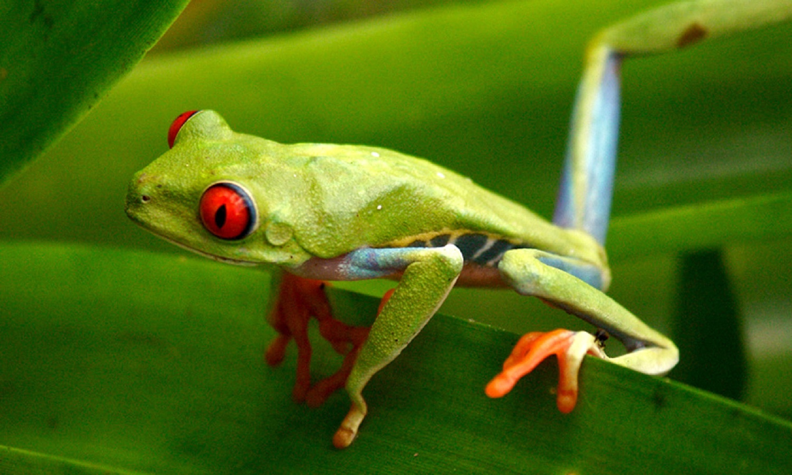

La Grenouille Arboricole aux yeux Rouges
Les Supers pouvoirs :
En cas d’attaque, elle ouvre ses yeux au maximum afin de les rendre plus impressionnants. Profitant de l’effet de surprise du prédateur, elle se propulse alors de toutes ses forces en un bond pouvant facilement atteindre un mètre de long.
Un peu de Culture
Le mot « grenouille » est déjà présent dans les dictionnaires de français anciens en 1606.Elles font partit de la classe des amphibiens. Leurs tailles varient de 4 à 5 cm. Leurs petits, les têtards, sont herbivores tandis que les grenouilles sont omnivores.

?
A rajouter